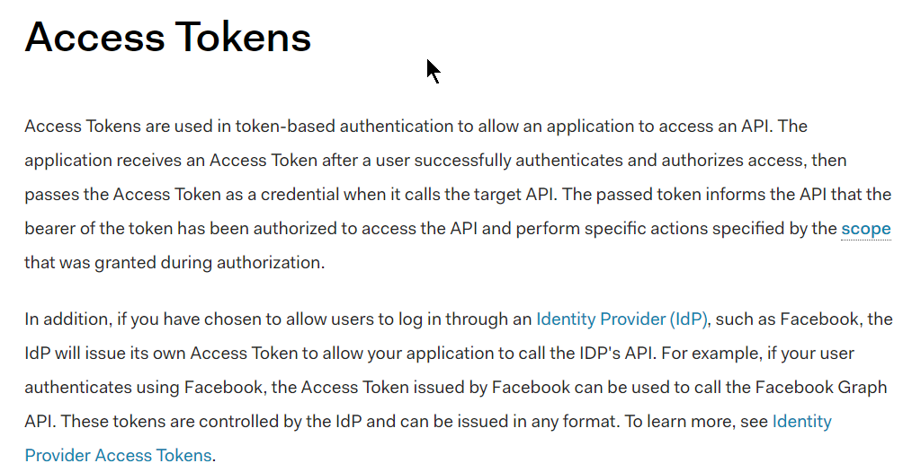
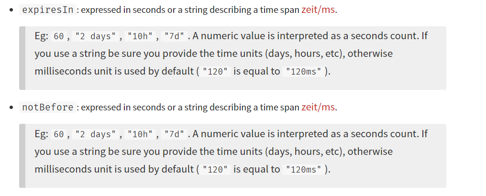
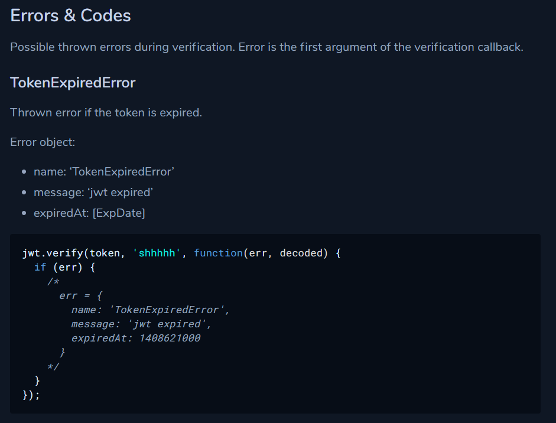

Use auth0.com to know more what it is...
Access token,
JONI CONVO..
OAuth 2.0, ==axios-oauth-client @ npm==
•oauth provider auth0 @googlesearch>?
•access token vs. refresh token?
•referesh tokens @googlesearch
•token should be sen with every request(joni) and backend shouldn't store it at all(joni)..
•(joni..)backend shouldn't store the refresh tokens..??
•If the application is for multiple users - the backend shouln't store he refresh tokens for security reasons but the refresh should be intiated from the browser.

Amazing follow up after the course for tons of features of jwt
• https://openbase.io/js/jsonwebtoken and
• Official documentation on the same page as the page @ https://www.npmjs.com/package/jsonwebtoken
Like - jwt.verify, and others..
why there's two such options when they do same thing ¿ They are different because they provide different options check out for it, via searching the text expiresIn and notBefore via searching

jwt.verify
verification checking??

Whats more?..